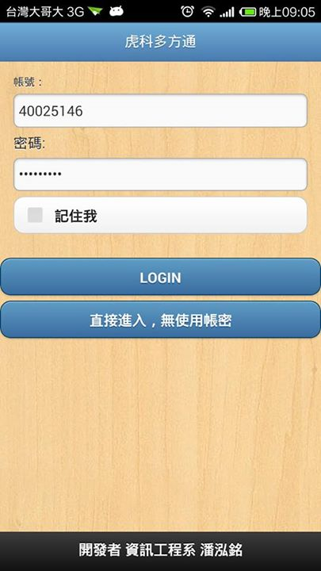
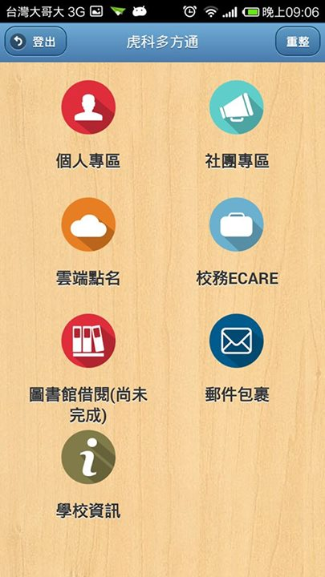
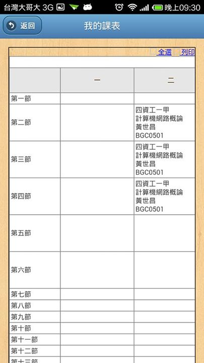
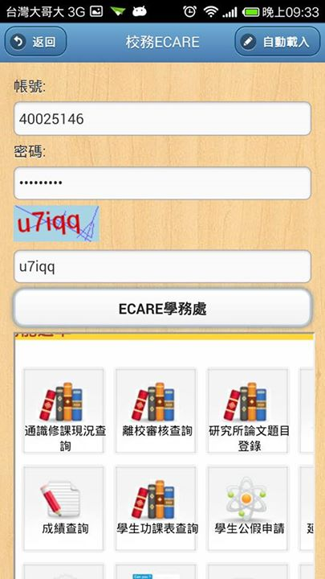

這是一套專為虎科學生開發的一套整合網站的APP 目的是方便使用單一帳號多方通入系統 減少登入上的麻煩，以及使用手機平台的方便性
這是個人練功所產生的作品，非學校單位 開發中-尚未上架至google play 製作時間總共 6天
學校的各處室網站幾乎沒有一套制定的規則去架設網站 以至於開發上遇到重重困難 例如想獨立製作較為舒適的課表版面，但卡在於學校的資料回傳值並非為開源資料 而是經過網頁處理後的資料 因此大多使用了iframe標籤直接嵌入
開發軟體: phonegap 、 cordova
編譯環境: Android 3.7.1 、 ios 3.8.0
登入時可選擇是否儲存賬密資料，儲存的方式使用SQL Lite 並不會將個人資料儲存在SD卡中作為檔案，同時方便下一次開啟時自動讀取。 
將大部分學生常用的網頁系統納入主要功能 讀取。 

